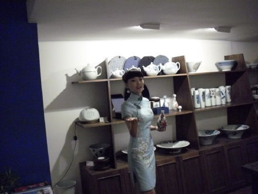
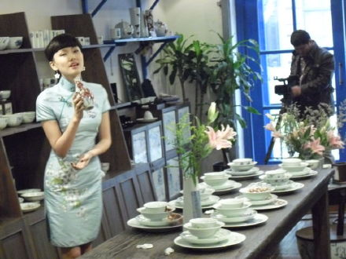
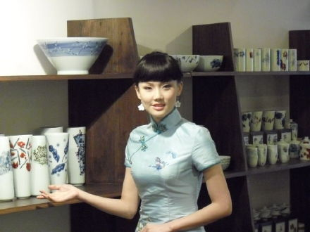
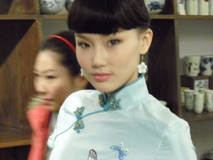
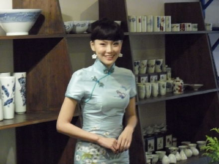

以前我是有语言障碍的，非常不自信，同别人交谈不知道说什么，莫名其妙的觉得害羞和难堪。
当然现在也并没有好多少。
音乐帮助了我很多，让我渐渐开朗，因为我觉得只要唱歌的时候大声唱出来，就不会觉得紧张了。所以在说话的时候只要我大声表达出我的意思，也不会紧张了。
我以前打排球的，不小心的去唱歌了，又不小心拍了几部戏，不小心演上了音乐剧，现在又不小心的当上了非专业的主持人。
是《奢华上海》的主持人，在上海航空和东方航空上播放。想不到在天上也遇见我。节目主要介绍上海的一些比较有意思的地方。他们想找一位有东方特色的女孩，所以邀请我去。
我现在变的自信了，而且也做好了准备。平时赶通告的时候就开始注意主持人的讲话，在演《弘一法师》的时候也观察别的角色的台词，平时和宋怀强老师讲话，他是上戏的教授，也会去听他的台词课。回家里对着镜子开始练习。
拍摄的时候把机器当成一个人，对它倾注感情。
穿了旗袍，齐刘海，跟2年前唱玫瑰玫瑰我爱你的时候，是一样的装扮。
之前旗袍穿在身上，好像是借来的。现在我要当我就是那个穿旗袍的人。




